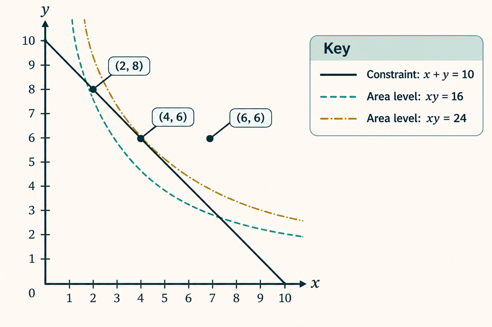

Predict gradients and feasible movement
If you completed 'Why the constraint matters', revisit your initial prediction about the rectangle's dimensions and your reasoning about which choices were feasible. Use that reasoning to distinguish changes that preserve the perimeter from changes that increase area without necessarily preserving it.
Predict before revealing explanations. Keep separate the question of whether area increases and the question of whether the perimeter constraint remains satisfied.
Which part of your reasoning establishes that area increases, and which part establishes that a movement is feasible? If your initial prediction changed, identify the mathematical observation responsible.
Explore the idea

The horizontal and vertical axes represent positive side lengths x and y. The descending straight line x+y=10 crosses the curved level sets xy=16 and xy=24. Points (2,8) and (4,6) are marked on the corresponding constant-area curves and on the straight line. Point (6,6) is marked separately in the same coordinate plane. The curve types are identified independently of colour. No gradient arrow, optimal point or feasibility classification is supplied.
Three ways to describe the same optimisation problem
An objective function assigns a value to every point in its domain. For the rectangle, \(A(x,y)=xy\) assigns an area to each pair of positive side lengths. An objective level curve collects all points with the same objective value. Moving along one level curve changes the dimensions but keeps the area constant.
The gradient of a differentiable function is the vector of its partial derivatives:
\[\nabla f=(f_x,f_y).\]
Where this gradient is non-zero, its direction gives the steepest local increase in the function per unit distance. It describes what would happen if movement were unrestricted. Its components also allow us to estimate the first-order effect of a proposed small change.
The perimeter condition introduces a different question. A permitted movement must keep \(x+y=10\) and must not leave the positive-dimensions domain. A direction that increases area may fail that test. Conversely, a movement that preserves perimeter need not follow the direction of steepest unrestricted increase.
These relationships describe two distinct kinds of movement within the same mathematical system: movement selected for its effect on the objective, and movement permitted by the constraint. The geometric problem is to understand how they interact.
In a diagram, an objective level curve is a constant-area path, a gradient arrow indicates local unrestricted increase, and the constraint line marks allowable dimensions. These meanings do not depend on colour or visual arrow length.
Your task
Revising against
A rectangle with fixed perimeter
This is a simulated mathematical teaching example, not an empirical dataset.
A rectangle has positive side lengths \(x\) and \(y\) and a fixed perimeter of 20 units. Its area is
\[A(x,y)=xy.\]
The perimeter condition is
\[2x+2y=20,\]
or equivalently
\[g(x,y)=x+y=10,\qquad x>0,\quad y>0.\]
Points to inspect
| Point \((x,y)\) | Area \(A(x,y)\) | Coordinates sum \(x+y\) |
|---|---|---|
| \((2,8)\) | 16 | 10 |
| \((4,6)\) | 24 | 10 |
| \((6,6)\) | 36 | 12 |
The objective level curves through the first two points have equations \(xy=16\) and \(xy=24\). Every point on one such curve has the area specified by its equation.
The gradients are
\[\nabla A(x,y)=(y,x),\qquad \nabla g(x,y)=(1,1).\]
For your direction prediction, begin at \((4,6)\). Substitute its coordinates into the general objective-gradient formula before deciding where a small movement would increase area.
Visual inspection guide
In an \(x\)-\(y\) plane, the horizontal coordinate is the first side length and the vertical coordinate is the second. The constraint \(x+y=10\) is a straight descending line through the positive quadrant. Each objective level curve \(xy=c\), for positive \(c\), is a curved line representing a fixed area. The three labelled points can be identified by coordinates without relying on colour.
An interactive representation may allow a point to move freely or remain attached to the constraint line. Record the coordinates and equation values as well as observing the visual movement. Do not assume that movement increasing area also preserves perimeter.
Record your predictions and reasoning
What to produce
A recorded interpretation of the supplied level curves, a predicted direction of local increase supported by gradient components, a correctly justified feasibility decision, and an explanation distinguishing movement that increases area from movement that preserves the constraint. The response should refer to equations or coordinates rather than relying only on a graphical impression.
Your draft is saved on this device when possible. It is not submitted.
Record your response for Level-curve interpretation.
Record your response for Predicted increase direction.
Record your response for Feasible movement.
Record your response for Explanation of the distinction.
Check your response
Back to your task (Predict gradients and feasible movement)
Complete your response first, then use this material to check or improve it.
Review your answer
Criterion 1 of 4
Have you interpreted the objective level curves as sets of constant area?
Show guidance for criterion 1
Why this matters
Confusing a level curve with a permitted path would obscure the difference between preserving area and preserving perimeter.
What to look for
- A. Each supplied level-curve equation is associated with its stated area.
- B. Your explanation distinguishes constant-area movement from fixed-perimeter movement.
If something is missing
- Missing A: Substitute the coordinates of the two supplied feasible points into the objective and associate each result with the appropriate equation \(xy=c\).
- Missing B: State which equation remains constant along an objective level curve and which equation must remain constant for feasibility.
Criterion 2 of 4
Have you justified your direction prediction using the objective gradient?
Show guidance for criterion 2
Why this matters
A visually plausible arrow alone cannot establish the direction of steepest unrestricted local increase.
What to look for
- A. The gradient is evaluated using the coordinates of the selected point.
- B. The signs and relative components of the gradient inform your directional prediction.
If something is missing
- Missing A: Substitute the selected coordinates into \(\nabla A=(y,x)\) before describing the direction.
- Missing B: Explain how each gradient component corresponds to a change in its coordinate, rather than relying on arrow placement.
Criterion 3 of 4
Have you tested feasibility against the actual perimeter constraint?
Show guidance for criterion 3
Why this matters
Without a constraint check, the response may mistake an area-increasing movement for an admissible one.
What to look for
- A. The proposed movement is checked against \(x+y=10\).
- B. Your reasoning respects positive side lengths and distinguishes the infeasible comparison point.
If something is missing
- Missing A: Write the new coordinate sum or the condition on the changes \(\Delta x+\Delta y\), then use it to evaluate feasibility.
- Missing B: Check both the coordinate sum and the positivity of the dimensions; explain why the comparison point cannot be selected solely because of its area.
Criterion 4 of 4
Does your explanation clearly separate unrestricted increase from feasible movement?
Show guidance for criterion 4
Why this matters
This distinction is needed to understand why constrained optimisation examines tangents rather than simply following the objective gradient.
What to look for
- A. You identify the mathematical rule governing unrestricted local increase.
- B. You identify the mathematical rule governing feasible movement.
If something is missing
- Missing A: Connect the objective gradient to local change in area without assuming that it preserves perimeter.
- Missing B: Connect allowable coordinate changes to the fixed-sum constraint, and compare this requirement with the gradient direction.
Reveal verified feedback
Review your initial reasoning
Open this explanation only after recording your predictions.
The level curve \(xy=16\) contains \((2,8)\), and \(xy=24\) contains \((4,6)\). Their areas differ because they lie on different objective level curves. Both points satisfy \(x+y=10\). By contrast, \((6,6)\) has area 36 but gives \(x+y=12\), so it violates the fixed-perimeter constraint. A larger objective value does not make a point an admissible choice.
At \((4,6)\),
\[\nabla A(4,6)=(6,4).\]
The gradient points towards increasing both coordinates and is the direction of steepest unrestricted local area increase. A small step \((\Delta x,\Delta y)=\varepsilon(6,4)\), for \(\varepsilon>0\), changes the coordinate sum by \(10\varepsilon\). It therefore fails to preserve the perimeter.
A movement along the constraint must satisfy
\[\Delta x+\Delta y=0.\]
For example, the direction \((1,-1)\) increases one side while decreasing the other by the same amount. From \((4,6)\), a sufficiently small positive step in this direction remains feasible and changes area as follows:
\[A(4+t,6-t)=(4+t)(6-t)=24+2t-t^2.\]
For small positive \(t\), area increases even though the movement is not parallel to the objective gradient. The direction \((-1,1)\) is also feasible locally, but has a different effect on area.
Compare your response with these two separate checks: the objective gradient indicates unrestricted local increase; the constraint equation determines whether a movement is allowed. Revise any statement that treats those checks as interchangeable.
Closure
Keep the two questions separate when moving into the next activity: which direction changes the objective, and which direction preserves the constraint?